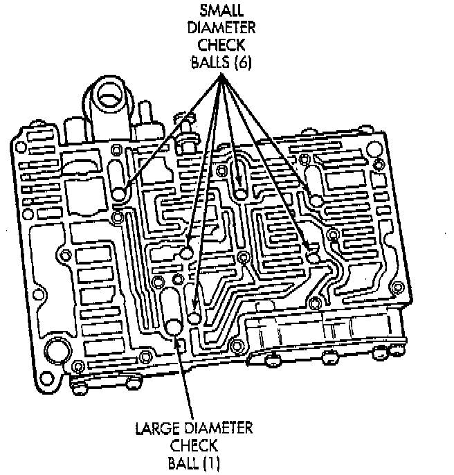
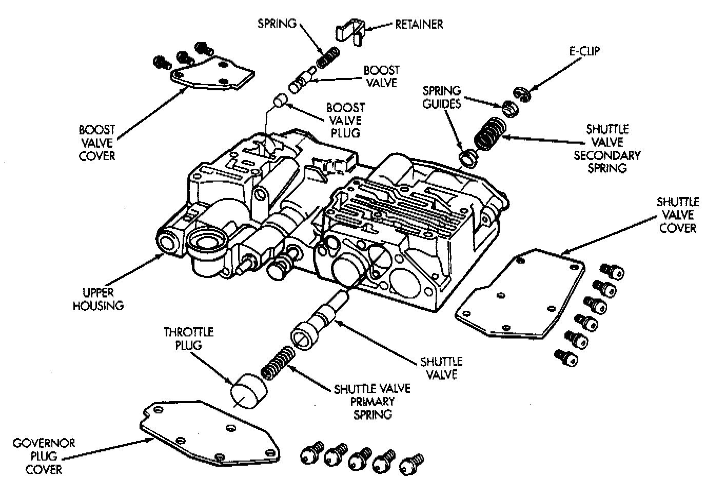
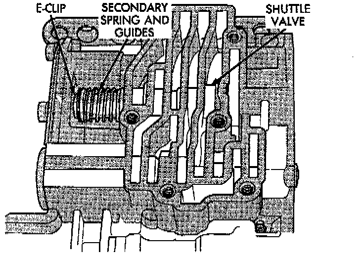
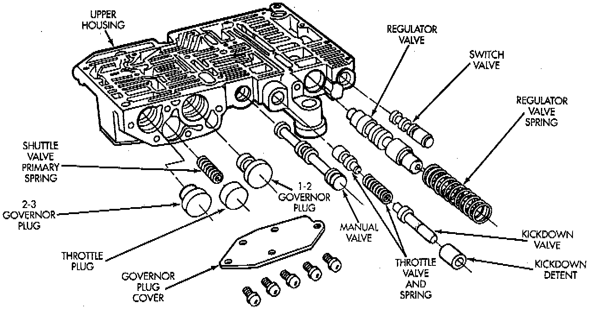
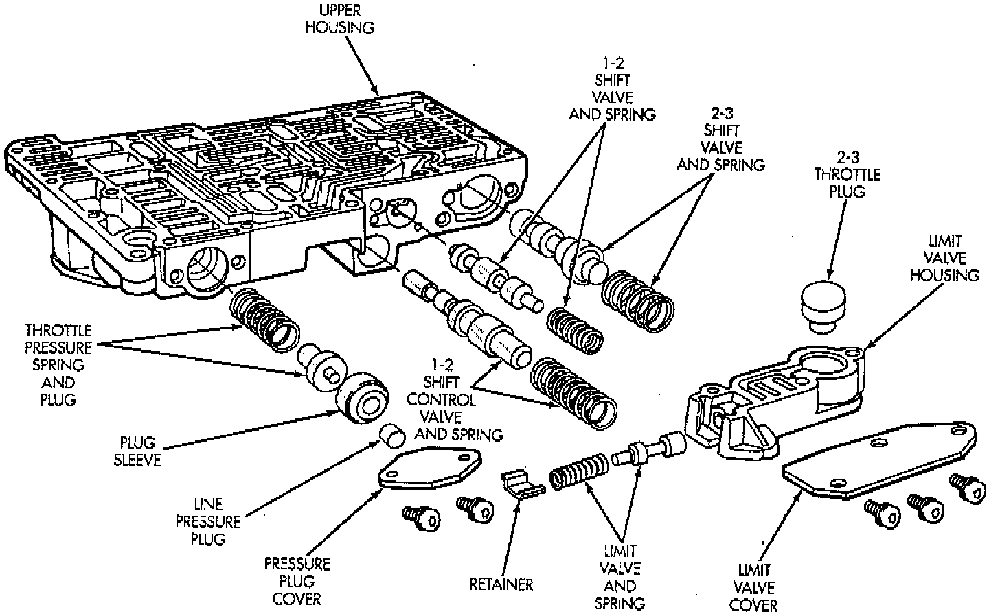

Upper Housing Disassembly

1. Note location of check balls in valve body upper housing. Then remove the one large diameter and the six smaller diameter check balls.
Shuttle And Boost Valve Components:

2. Remove governor plug and shuttle valve covers.

3. Remove E-clip that secures shuttle valve secondary spring on valve stem.
4. Remove throttle plug, primary spring, shuttle valve, secondary spring, and spring guides.
5. Remove boost valve retainer, spring and valve if not previously removed.
Upper Housing Control Valve Locations:

6. Remove throttle plug and 1-2 and 2-3 governor plugs.
Upper Housing Shift Valve And Pressure Plug Locations:

7. Turn upper housing around and remove limit valve and shift valve covers.
8. Remove limit valve housing. Then remove retainer, spring, limit valve, and 2-3 throttle plug from limit valve housing.
9. Remove 1-2 shift control valve and spring.
10. Remove 1-2 shift valve and spring.
11. Remove 2-3 shift valve and spring from valve body.
12. Remove pressure plug cover.
13. Remove line pressure plug, sleeve, throttle pressure plug and spring.